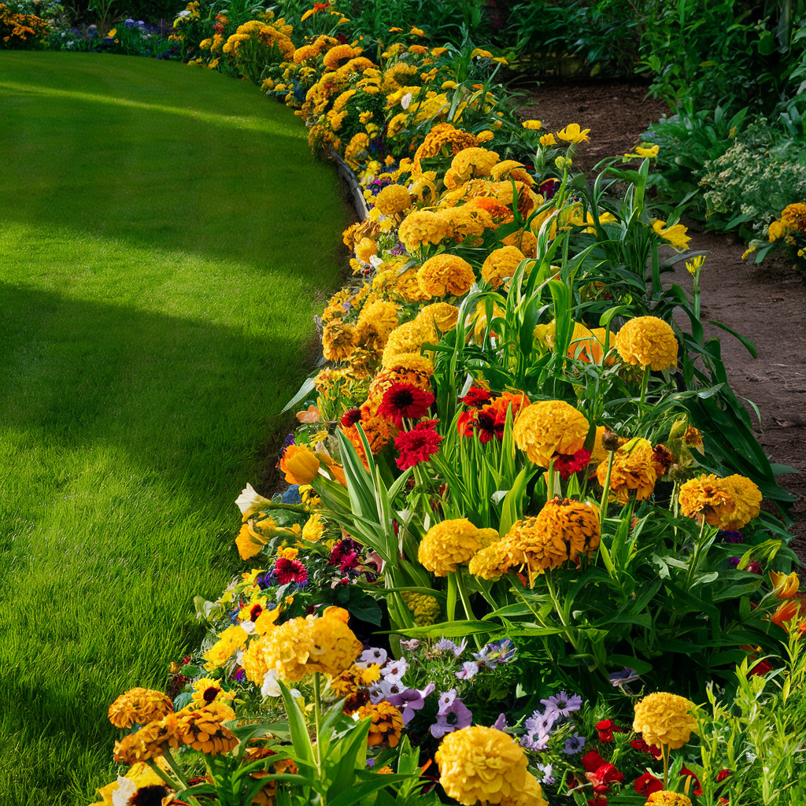

Few plants can rival the splendor of hydrangeas when they unfurl their enormous flower clusters in summer. Belonging to the genus Hydrangea, these shrubs native to eastern Asia and the Americas have established themselves as garden essentials since the 19th century. From Brittany to Normandy, from the woodlands of the Basque Country to Parisian city gardens, hydrangeas captivate with their generous blooming, their extraordinary color palette -- from deep blue to soft pink, from immaculate white to purple-red -- and their surprisingly easy cultivation. Whether you are a beginner or experienced gardener, this complete guide will reveal all the secrets to successfully planting, caring for and getting your hydrangeas to bloom, season after season.
The Main Hydrangea Varieties for Your Garden
The genus Hydrangea comprises about 75 species, but only a few are commonly cultivated in our gardens. Each species has unique characteristics that make it suited to different situations. Choosing the right variety is the first step toward a successful hydrangea garden.
Hydrangea macrophylla: the classic hydrangea
This is the best-known and most widely grown species, the one that immediately comes to mind when thinking of hydrangeas. Native to Japan, Hydrangea macrophylla forms a rounded shrub 3 to 6.5 feet (1 to 2 meters) tall, with large glossy leaves of a deep green. Its spectacular flower heads come in two distinct forms. "Mophead" varieties produce large, round, dense globes, perfect for maximum visual impact. "Lacecap" varieties offer flattened, more delicate flower heads, with a ring of large sterile flowers surrounding a central cluster of small fertile flowers, greatly appreciated by pollinators. This is the species with the fascinating ability to change color depending on soil acidity: blue in acidic soil, pink in alkaline soil. Among the most popular cultivars are 'Endless Summer', which blooms on both old and new wood, 'Nikko Blue' for its intense blue, 'Madame Emile Mouillere' for its pure white, and 'Merveille Sanguine' for its purple flowers.
Hydrangea paniculata: the panicle hydrangea
If you are looking for a robust, cold-hardy, and easy-to-grow hydrangea, Hydrangea paniculata is your best ally. Native to China and Japan, this vigorous shrub can reach 10 to 16 feet (3 to 5 meters) in height and withstands temperatures down to -22 °F (-30 °C). Unlike macrophylla, it blooms exclusively on current year's wood, making it much more tolerant of pruning and eliminating the risk of removing flower buds through clumsy pruning. Its conical, elongated flower heads, often 8 to 12 inches (20 to 30 cm) long, evolve beautifully throughout the season: from greenish-white in early summer, they gradually turn pink then raspberry-red in autumn. Flagship varieties include 'Limelight' (lime green turning pink), 'Vanilla Strawberry' (bicolor white and pink), 'Phantom' (the largest panicles of the genus), and 'Little Lime' (compact version ideal for small gardens and containers).

Hydrangea quercifolia: the oakleaf hydrangea
Native to the southeastern United States, this hydrangea deserves a prime spot in any garden for its triple season of interest. In spring and summer, its large lobed leaves reminiscent of oak foliage offer a unique decorative element among hydrangeas. In summer, it produces long conical panicles of white flowers that turn pink as they age. But it is in autumn that it gives its finest show, when its foliage takes on flamboyant hues: red, purple, orange, and bronze. It tolerates drought and sun better than other species, and its exfoliating bark adds winter interest. Hydrangea quercifolia reaches 5 to 8 feet (1.5 to 2.5 meters) and is perfectly suited to informal hedges and mixed borders. The varieties 'Snow Queen', 'Alice', and 'Ruby Slippers' are among the most popular.
Hydrangea serrata: the mountain hydrangea
A close cousin of macrophylla but more compact and hardier, Hydrangea serrata is native to the mountains of Japan and Korea. It forms a small shrub of 2.5 to 5 feet (80 cm to 1.5 meters), perfect for small gardens, borders, and container growing. Its lacecap flowers are of refined elegance. Less water-demanding than macrophylla, it adapts to more varied conditions. The varieties 'Bluebird', 'Preziosa', and 'Tiara' are particularly recommended.
Hydrangea petiolaris: the climbing hydrangea
Unique in its kind, Hydrangea petiolaris is a vigorous climbing plant capable of reaching 50 to 80 feet (15 to 25 meters). Thanks to its aerial roots, it clings unaided to walls, trees, and fences. In June, it covers itself with large, flat clusters of delicately fragrant white flowers. It is the ideal solution for covering a north-facing wall, a situation that few flowering climbers tolerate. Be patient, however: it can take 2 to 3 years to establish before growing vigorously.
Did You Know?
The name "Hydrangea" comes from the Greek hydor (water) and angeion (vessel), referring to the shape of the seed capsules that resemble small water cups. In Japanese, the hydrangea is called ajisai and carries deep symbolism linked to the rainy season, gratitude, and changing emotions -- a nod to its color-changing flowers.
Planting a Hydrangea: Step-by-Step Guide
Planting is a crucial moment that determines the vigor and blooming of your hydrangea for years to come. Properly preparing the soil and choosing the right location will spare you many disappointments.
When to plant?
The best time to plant a hydrangea runs from September to November in mild climates, and from March to May in regions with harsh winters. Autumn planting is preferable as autumn rains promote rooting and the shrub will be ready to bloom the first summer. Absolutely avoid periods of frost and summer heat waves. If you buy a container-grown hydrangea (the most common case), you can theoretically plant it year-round, but you will need to water very regularly if planted outside the optimal periods.
Choosing the right location
Hydrangeas are woodland plants that thrive in dappled light. The ideal location offers morning sun and afternoon shade, or light shade filtering through the foliage of deciduous trees. Full sun is acceptable only in cool and humid northern regions. In warmer southern areas, a semi-shaded location is imperative to prevent leaves and flowers from scorching. Hydrangea paniculata and Hydrangea quercifolia tolerate sun better than macrophylla. Protect your hydrangeas from strong, drying winds, especially cold winter winds that damage buds.
Preparing the soil
Hydrangeas thrive in rich, moist, well-drained, and humus-rich soil. Two to three weeks before planting, dig a hole 24 inches (60 cm) in diameter and 20 inches (50 cm) deep -- two to three times the size of the root ball. Mix the extracted soil with one-third leaf mold or well-rotted compost, and one-third ericaceous compost if your soil is alkaline. For heavy clay soils, add a handful of gravel or perlite at the bottom of the hole to improve drainage. For overly sandy soils, incorporate more compost to improve water retention. Hydrangeas dislike permanently waterlogged soils just as much as soils that dry out too quickly.
The planting itself
Submerge the root ball in a bucket of water for 15 to 30 minutes to thoroughly hydrate it. Place it in the hole so that the top of the root ball sits level with the surrounding soil -- never bury the crown. Fill with the prepared soil mix, lightly firming with your hands to eliminate air pockets. Form a watering basin around the plant and water generously: allow at least 2.5 gallons (10 liters) of water. Mulch immediately with a layer of 2 to 3 inches (5 to 8 cm) of pine bark, shredded dead leaves, or flax straw. This mulch will conserve moisture, keep the soil cool, and limit weed development. Space hydrangeas at least 5 to 6.5 feet (1.5 to 2 meters) apart for classic varieties, accounting for their mature size.

The Secret of Colors: Acidic Soil, Alkaline Soil
The ability of macrophylla hydrangeas to change color depending on soil pH is undoubtedly their most fascinating characteristic. It is a phenomenon unique in the plant world, which intrigued botanists for centuries before being fully understood.
How does the color change work?
The flower color of macrophylla hydrangeas depends on the presence of aluminum ions in the petal cells. In acidic soil (pH below 5.5), the aluminum naturally present in the soil is soluble and absorbed by the roots. It combines with the anthocyanin pigments in the flowers to produce blue coloration. In neutral to alkaline soil (pH above 6.5), aluminum is locked in an insoluble form and the flowers remain pink. Between pH 5.5 and 6.5, you will often get intermediate shades, sometimes mauve, sometimes bicolored, with blue and pink flowers on the same plant. White hydrangeas do not change color because they contain no anthocyanins -- they may at most turn slightly pink at the end of the season.
Getting blue hydrangeas
To turn your pink hydrangeas blue, you must acidify the soil and make it rich in available aluminum. Several methods are available. Aluminum sulfate is the most direct solution: dilute 15 to 20 grams per liter of water and water at the base of the plant once a month from March to June. Ericaceous compost mixed with the original soil gradually lowers the pH. Pine bark and pine needle mulch naturally acidifies the soil over time. Rainwater, naturally acidic, is preferable to often alkaline tap water. Finally, coffee grounds buried at the base of plants contribute to acidification. Be patient: the color change generally takes a full season to become visible.
Keeping pink hydrangeas
If you prefer pink flowers, maintain a neutral to slightly alkaline soil (pH 6.5 to 7). In naturally acidic soil, you can add dolomitic lime or wood ash to raise the pH. Water with tap water (often alkaline) rather than rainwater. Avoid acidic mulches (pine bark, conifer needles) and prefer a mulch of deciduous leaf mold or flax straw.
"The hydrangea is the chameleon of the garden. Offer it acidic soil and it will reward you with a dreamy blue; feed it lime and it will don a delicate pink. No other plant offers you this living, changing palette."
Hydrangea Care Through the Seasons
Hydrangea care is relatively simple, but a few regular actions make all the difference between an ordinary shrub and a dazzling specimen. Here is the calendar of essential care throughout the year.
Watering: the key to success
The very name hydrangea betrays its need for water. Hydrangeas are water-hungry plants that do not tolerate prolonged drought. In summer, water generously two to three times a week, or even daily during heat waves. Always water at the base, never on the foliage, preferably in the morning or late afternoon. A hydrangea lacking water shows it immediately: its leaves and flowers droop pitifully. Fortunately, a generous watering revives it within a few hours. Rainwater is always preferable to tap water, especially if you wish to maintain blue color. A good mulch of 2 to 3 inches (5 to 8 cm) considerably reduces watering needs by keeping the soil cool.
Fertilization
Hydrangeas are hungry shrubs that appreciate regular nutrient inputs to support their abundant blooming. In spring, in March-April, spread a layer of 1 to 2 inches (3 to 5 cm) of well-rotted compost at the base of each plant, supplemented with a handful of organic fertilizer formulated for acid-loving plants or hydrangeas. In June, a second application of liquid fertilizer diluted in the watering water will support ongoing blooming. Stop all fertilization after July to allow new growth to harden before winter. Excess nitrogen promotes foliage at the expense of flowers: prioritize fertilizers rich in phosphorus and potassium.
Mulching: an essential step
Mulching is probably the most beneficial care action for hydrangeas. Renew it twice a year, in spring and autumn. Maritime pine bark is the ideal mulch for hydrangeas: it slightly acidifies the soil, conserves moisture, protects shallow roots from extremes of heat and cold, and decomposes slowly while feeding the soil. Shredded dead leaves, straw, flax straw, and chipped branches are also excellent options.

Pruning Hydrangeas: When and How
Pruning is often the subject that worries gardeners the most, because poorly timed or executed pruning can eliminate all of the following year's blooms. The fundamental rule is simple: it all depends on the species you are growing.
Pruning Hydrangea macrophylla and serrata
These species bloom primarily on the previous year's wood, meaning on stems that grew the previous summer and carry flower buds formed at the end of the season. Pruning is done in late winter, between February and March, when buds begin to swell. Cut spent flowers just above the first pair of well-formed buds. Never cut flush: you would remove the future flower buds. Remove dead wood and the oldest stems (those over three years old) at the base to renew the framework and encourage vigorous new growth. Plan to remove about one-third of old stems each year. Reblooming varieties like 'Endless Summer' are more tolerant as they also bloom on current year's wood.
Pruning Hydrangea paniculata and arborescens
Good news: these species bloom on current year's wood, meaning you can prune them hard in late winter with no risk to blooming. In February-March, cut back all stems to 2 or 3 pairs of buds above the framework, roughly 12 to 20 inches (30 to 50 cm) from the ground. This drastic pruning stimulates the production of long vigorous shoots that will carry very large flower heads. If you prefer a larger shrub with smaller flowers, prune less severely, keeping longer stems. Always remove dead wood and branches that cross in the center of the shrub.
Pruning Hydrangea quercifolia
The oakleaf hydrangea requires very little pruning. Simply remove spent flowers after blooming and eliminate dead wood in spring. If the shrub becomes too large or unruly, you can shorten a few branches after blooming, in summer. Avoid any severe winter pruning as it blooms on old wood.
The Golden Rule of Pruning
When in doubt, don't prune. An unpruned hydrangea will still bloom, even if less neatly. A timid pruning is better than an excessive one. And remember: never remove spent flowers before the end of winter. They protect the buds from frost and offer a magnificent decorative display under the frost.
Hydrangea Diseases and Pests
Hydrangeas are generally robust plants, but they can be affected by a few problems that should be recognized and treated promptly.
Powdery mildew
This fungal disease manifests as a white powdery coating on the leaves, generally in late summer when nights are cool and humid and days are warm. Affected leaves become distorted and yellow prematurely. To prevent powdery mildew, ensure good air circulation around the plant by not cramming it between other shrubs. Water at the base and not on the foliage. For treatment, spray a baking soda solution (1 teaspoon per quart / 5 grams per liter of water with a little liquid soap) or a sulfur-based fungicide. Remove and destroy the most affected leaves.
Iron chlorosis
Very common in alkaline soil, chlorosis is recognized by yellowing of the leaf blade while the veins remain green. This is a sign that the plant cannot absorb iron from the soil because the pH is too high. To correct the problem, apply an anti-chlorosis treatment based on chelated iron (sequestered iron) as a drench or foliar spray. In the longer term, acidify the soil with ericaceous compost, powdered sulfur, or acidic mulch. Also check that the irrigation water is not too alkaline.
Leaf spots
Several fungi can cause brown, black, or purple spots on the leaves. These spots, while unsightly, rarely endanger the plant's life. Collect and destroy affected leaves to limit spread. Improve air circulation and avoid overhead watering. In case of severe attack, a treatment with Bordeaux mixture in late winter can be effective as prevention.
Slugs and snails
Young hydrangea shoots in spring are a veritable feast for gastropods. Protect new growth with barriers of crushed eggshells, wood ash, or organic slug pellets based on iron phosphate. Beer traps are also effective but must be renewed frequently.
Aphids
Green or black aphids sometimes colonize young shoots and flower buds in spring. A strong water jet is often enough to dislodge them. In case of persistent infestation, spray an insecticidal soap solution (1 oz per quart / 30 grams per liter of water) or introduce ladybugs, their most effective natural predators.
Growing Hydrangeas in Containers
Container growing is an excellent option for balconies, terraces, and patios, or for regions with very cold winters where you wish to overwinter the plant under cover. Certain varieties are particularly well-suited to this.
Choosing the right pot and substrate
Choose a pot at least 16 to 20 inches (40 to 50 cm) in diameter and depth, with generous drainage holes. Terracotta pots are attractive and allow good root respiration, but they dry out faster and can crack in frost. Resin or fiber pots are lighter and frost-resistant, but retain more moisture. Place a layer of clay pebbles or pottery shards at the bottom for drainage. Use a mix of half quality planting compost and half ericaceous compost. Add a handful of perlite to improve drainage if the mix feels too dense.
Best varieties for container growing
Choose compact varieties that won't exceed 3 to 4 feet (1 to 1.2 meters). Among macrophylla, 'Cityline Paris', 'Magical Revolution', and 'Forever & Ever' are excellent choices. In paniculata, 'Little Lime', 'Bobo', and 'Little Quick Fire' stay small and bloom abundantly. Hydrangea serrata such as 'Tiara' and 'Bluebird' are naturally compact and thrive in pots.
Specific container care
Watering is the critical point of container growing. In summer, you will need to water daily, or even twice a day during intense heat. Install a saucer filled with gravel under the pot to create a moisture reserve without drowning the roots. Fertilize every 2 weeks from March to August with a liquid fertilizer for acid-loving plants, following the recommended dosage. Repot every 2 to 3 years into a slightly larger pot, refreshing the substrate. If repotting is not possible, top-dress by replacing the top 2 inches (5 cm) of soil with fresh substrate each spring.
Overwintering Hydrangeas: Cold Protection
Hydrangea hardiness varies considerably by species. While Hydrangea paniculata withstands -22 °F (-30 °C) without flinching, macrophylla is more sensitive and can suffer from 5 °F (-15 °C) onwards, especially at the level of its flower buds.
Winter protection in the ground
In regions with moderate winters, in-ground hydrangeas generally need no special protection. However, in regions with harsh winters, a few precautions are in order. In November, mound up the base of the plant by piling 8 inches (20 cm) of dead leaves, straw, or compost around the base. Wrap the branches in a frost protection fleece, securing it loosely to allow air circulation. Above all, do not prune before winter: the stems and dried flowers naturally protect the buds from frost. Remove protection gradually in spring, when the risk of severe frost has passed, generally in March-April.
Overwintering container hydrangeas
Container hydrangeas are much more vulnerable to cold because the roots are not insulated by the mass of garden soil. Below 23 °F (-5 °C), frost can penetrate the pot walls and damage the roots. The best solution is to bring the pot into a frost-free but cool, bright location: a glazed garage, unheated conservatory, cellar, or cold greenhouse. The ideal overwintering temperature is between 35 and 46 °F (2 to 8 °C). Drastically reduce watering but never let the root ball dry out completely. If you cannot bring the pot indoors, group your pots against a south-facing wall, surround them with polystyrene or bubble wrap, and wrap the aerial parts in frost protection fleece. Place the pot on a wooden board or polystyrene sheet to insulate the bottom from frozen ground.
Propagating Your Hydrangeas
Cuttings are the simplest and most reliable propagation method for hydrangeas. It is also an excellent way to share your finest varieties with neighbors and gardening friends.
Summer cuttings
The ideal time to take hydrangea cuttings is between June and August. Take 4 to 6-inch (10 to 15 cm) non-flowering stem tips. Cut just below a node. Remove the leaves from the lower half and halve the remaining leaves to reduce evaporation. Dip the base in rooting hormone powder. Plant in a mix of peat and perlite (50/50) in individual pots. Water and cover with a clear plastic bag or place in a mini-greenhouse to maintain high humidity. Place in shade and keep the substrate moist. Rooting takes 4 to 8 weeks. Repot the rooted cuttings in richer potting mix and overwinter them frost-free the first year. Plant out the following spring.
Division
For hydrangeas that have formed large clumps with many stems emerging from the ground, division is possible in spring. Dig up the entire plant or a peripheral portion, separate the rooted sections with a sharp spade, and replant immediately in well-prepared soil. Water generously and mulch.
"A garden without hydrangeas is like a painting without colors. Their floral generosity, their ability to illuminate shady corners, and their changing nature make them irreplaceable garden companions."
Companion Planting Ideas
Hydrangeas are sociable plants that pair beautifully with many garden companions. Here are some proven, harmonious combinations.
In a shade border
Pair your macrophylla hydrangeas with ferns (whose airy foliage creates a texture contrast), hostas (for their spectacular leaves), astilbes (whose colorful plumes complement hydrangea globes), brunneras, and heucheras. Rhododendrons and azaleas, which share the same acidic soil requirements, form natural companions. For ground cover, add periwinkles, lily of the valley, or epimediums.
As an informal hedge
Paniculata and macrophylla hydrangeas make superb flowering hedges. Plant them every 5 to 6.5 feet (1.5 to 2 meters) and alternate varieties to vary colors and extend the blooming season. Complement with ornamental grasses like miscanthus for a natural, contemporary effect.
In containers on the terrace
Create terrace scenes by combining container hydrangeas with lavenders, potted grasses, heucheras, and trailing fuchsias. Play with heights and textures to create a living, changing display throughout the seasons.
Frequently Asked Questions About Hydrangeas
My hydrangea won't bloom -- why?
The most common causes are: pruning too severely or at the wrong time (on macrophylla, this removes flower buds), a late spring frost that destroyed the buds, a location that is too shaded (a minimum of 3 to 4 hours of light is needed), or excess nitrogen in fertilization that promotes foliage at the expense of flowers. Identify the cause and correct it for the following season.
Can you dry hydrangea flowers?
Hydrangea flowers lend themselves wonderfully to drying. Pick them in late summer, when they begin to change color and become slightly papery. Hang the stems upside down in a dry, airy, and dark place for 2 to 3 weeks. The flowers will retain their tones for months, even years. You can also let them dry directly on the plant in autumn.
Are hydrangeas toxic?
Yes, all parts of the hydrangea contain cyanogenic glycosides that can cause nausea, vomiting, and diarrhea if ingested. While serious poisoning is extremely rare, keep children and pets away from the plants and wear gloves if you have sensitive skin when pruning.
The hydrangea is truly an extraordinary plant, capable of illuminating the darkest corners of the garden with its spectacular flower heads. Its cultivation, while requiring some attention, is within reach of all gardeners. With the right location, suitable soil, generous watering, and thoughtful pruning, your hydrangeas will reward you with sumptuous blooms for decades. For this is one of their greatest assets: properly maintained, hydrangeas are remarkably long-lived plants, capable of thriving and becoming more beautiful for 50 years and more. So don't hesitate: give your garden the magic of hydrangeas, and let yourself be enchanted by their changing and generous beauty.